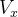
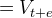
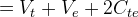
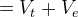
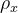
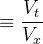
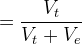

| テスト理論 |
| テスト理論 |
式(26)より、
|  |  | (27) | ||
 |
 | (28) | ||
|
 | (29) |
である。このとき、信頼性係数を
|  |  | (30) | ||
|
 | (31) |
で定義する。
信頼性係数がいくら以上であれば高い信頼性といえるか決まりはないが、おおむね0.8から0.9以上が求められることが多い。 一方で、古典的テスト理論のモデルのように観測値から真値と誤差を分離することは通常できないため、定義通りの信頼性係数をデータから計算することはできない。 従って、テストの信頼性を評価するにはいくつかの工夫が必要である。 一般には、以下に述べるような強平行測定や弱平行測定といった仮定の下に、テストの信頼性係数をデータから推定するのが一般的である。
| テスト理論 |